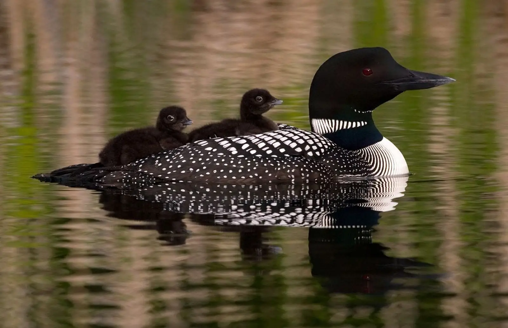

Loons are found in North America, Asia, and Europe.
Usually spending most of their time in rivers and Lakes.
migrating to coastal oceans and large inland Lakes in the winter.
They hunt for fish by submerging themselves underwater.

photo by gavia immer
they dont just eat fish, as they also eat
aquatic invertabrates, crustaceans, mollusks, frogs, and sometimes even plants.

Loons are very unique animals that make beautiful sounds too
Check out the loon sounds.
Click here to learn more about loon sounds.